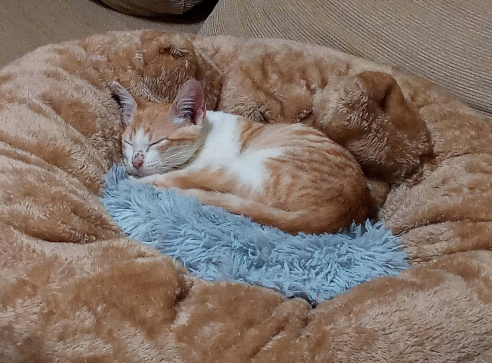

Why a cats webpage?
Cats are wonderful, they have many characteristics. Each one has a distinct and marked personality. They are companions, but with their feline instinct on the surface. Soft, delicate, beautiful and strong. Beautiful. In this page, we can share info, experiences, anecdoties, tips, and wathever we want about the cats.
My experience
I have a Little cat named Lilu. Shes a very playful pet and so lovely too. Have 3 months age, so she still learning to live with us in this house. Sometimes she misbehaves, we scold her, and shes make lovely moves, so it can be a litlle manipulating.
Your experience
In this web, you can told me your experience about your cat. Can be anecdotes, tips, stories, or whatever you want. Feel free!
